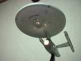
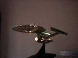

2003/9/29
5mmのアルミが曲がるんですか、、、。曲げが難しいといってる自分が恥ずかしい。
部品2つ完成。穴位置がずれているので後日修正予定。2003/9/28
素人には難しい曲げを使わずにアルミアングル、チャンネル、平板、それとスペーサーくらいでポテ軸直行ができる気がする。基盤の置き場所は不明だけど。暇ができたらつくろうかな？
失敗した部品の作り直し。さらに失敗があったりで半日以上かかる。ねじ穴の位置決めはケガキとポンチはやめて、フライスの目盛りを使って開けたほうが、はるかに精度が良く失敗も少ないと言う事にいまさらながら気づく。
サーボセーバーをhttp://www.kyoshin.ne.jp/に注文。ということは、今作った部品はまた作り直し。なんてこった。
ポテ軸直行は単純ミスで、たぶん昨日考えたほどは股間を狭められないことがわかる。そうだよなぁ。そう単純じゃないよなぁ。一回サーボケースを切断してみないとわからないや。2003/9/27
やばいよ。JINさんのところからhttp://www.forme-jp.net/みちまったよ。これなら何とか家にも置けるよ。PROXXON率が大きくなるよ。本当にやばいよなぁ。予算的にもがんばれば出るし。穴あけだけでもできれば作業率アップ。うーん。かなり心が動く。ソフトが自分で作れるならそれも面白そうだ（帰って来れなくなったりして）。
今週は色々本を買ったりでお金ない。今まで予算不足で買えなかった分だけ反動で買ってしまった。これがなければなぁ。
どちらにしろ、机が狭いので今使ってないボール盤をどうにかしないと置けない。どうにかしても、さらに何とかしないと置けないけど。
また設計変更。つま先部分をちょっと下げる。足首とつま先の軸の高さが同じでなくなった。よく考えたら別に同じ高さにする必要は無いことの気づく。それで、足首部分をちょっとだけ（1.5ｍｍ）あげてみた。気が向いたらもうちょっとあげてみるつもり。
衝撃！宮田さんもやってたが、夢さんの両もち構造サーボ、、、。この方法だと、例えば左右サーボの角度をわざと少しずらすことであのいやなバックラッシュをなくせるかも知れない。電流が増えるのは欠点だけど。しかし、ひざの弱さを克服できるかも、、、。
ためしにちょっと図面上で配置をしてみる。なんとかなるか、、、。どうしよう。いちおう、もしものときはできるように設計するか。
なるほど。宮田さんのポテ軸直行は結構おいしい。真似しそうだ。
ポテンショの裏を削るというのはかなりおいしい。ちょっと図面を書いてみたら、かなりコンパクトにまとめられる。
ちくしょう！ケースを加工する以外、欠点が見つからない。まいった。
ひとまず今のを作りつつ、そっちも検討しよう。でないとつまらないから。それにしても、雑な設計とはいえ、股間50mmになった。なんてこった。おいしすぎる。
お金がないといいながら、GWSのサーボ、その他を注文。あくまで評価用なので少数。昔（Brownie01のころ）GWSのサーボを使ってて（S3002と互換とか言うの）ファイナルのプラスチックギアがかけまくるという記憶があったので迷っていたが、メタルギアならもしかしたらと思って。昔使ったやつは（多分）最初からギアが割れてたのもあたりで、とても品質が悪かった。しかも、S3002とコンパチとか書いてあったのに軸の長さ、その他色々違いがあって悲しかった。
KRS-2346ICS。20Kgcmですか。うーん。10個98000円というところで、ちょっと手が出ません。その半分ならなんとかなるんですが。それにしてもかなり本気だなぁ。
部品作り直し。バンドソーが使いきれない、、、。2003/9/26
「ぴよぴよ天使」は面白いけど、いい大人が読むものではないです。「まりみて」（そう略すの知らんかった）はパロディーで知ってるだけで、内容は知らないです（それもかなり問題あり）。心の叫びにしたかったんですが、それは色々やばいので、あくまでひとりごとです。と、つっこみ（？）に答えておく。
世の中サーボ改造も当たり前。みんなすごくて、自分がなんかなぁ。
設計ミスで1mmずれてる。たった1mm。角度で1度。悩んだ末、明日以降作り直し。逆運動学は解かない（解けない？）つもりなので、別に軸の直交にこだわってないけど、いつ気が変わるかわからないので、念のため。2003/9/25
なんとなく電車の中で足首をBrownie01の構造に戻したくなる。また設計やり直し。結構難しい。足首のシャフトが片もち構造になる。強度がなぁ。
ある程度、足の設計ができてくる。いまひとつうまくない。曲げを使えばいいのかな？ためしに斜め曲げをやってみようか。穴は曲げた後にケガクといいのかな？
やっぱり曲げはやめ。何とか抜け道が見つかった。バンドソーを活用しよう。それがダメなときはまた何か考えよう。2003/9/24
仕事のことはここでは書かない。というか書いちゃいけない。しかし、何かあったとだけ記録。
工場に某氏が来ていたので謎のCADを見せる。ぼちぼち評判はいい（のか？）。使ってもらっては無いけど。アルファー版公開はもうちょっとまとまってから。そして、プロジェクト名を変更してから。
昨日考えたページ関係のアイデアはやっぱりやめ。めんどくさそう。
穴あけ失敗（そればっか）。変な形になった。たいして影響は無いが見栄えが悪い。次は間違えないようにしよう。図面にコメントを書こう。
一応、つま先にサーボセーバーを付けたが、無いほうがいいのかなぁ。
なんか一日一つの部品しかできない。凡人は、こんなもんだよね。片足ができたらもう片方は複製するだけだからもうちょっと早くなるかな？
HPの容量不足で動画一部削除。動画がでかすぎるんだよね。
バンドソーになれてきた。やっぱり、ヤスリがけだね。2003/9/23
ページ関係を実装。ページ番号のエディットボックスでちょっと苦労する。
作ってて、何でこんな構造にしたんだと思うところがいろいろ出てきたので、見直そう。ページはオブジェクトで指定するんじゃなくて、ページ番号（インデックス）で指定に直す。0ページはマスターページと。マスターページを複数持つことはないよなぁ。
レイヤーもそうしてもいいけど、本当はレイヤーの下にレイヤーがあったりという構造も可能なんだけど、使わないだろうから、、、。いま変更するのは面倒なのでやめよう。
おかしいですよ！カテジナさん！干渉しますよ。ちょっと修正。また加工が難しくなる。
穴の位置がちょっとずれた。ねじを切るところだから、ちょっときついか？
なんとなく重い。もうちょっと肉抜きが必要か？肉抜きといっても、MAGIさんに比べれば全然。というかあれはすごすぎ。カーボンは丈夫なのかなぁ。カーボンは使いたくても加工がちょっと。使ったことないけど。2003/9/22
おなかの調子が悪かった。窓開けて寝たからか？
ページをステータスバーにボタンを付けて（メニューで）選択させようとしたが、すでに100ページ以上の図面があるので、そんなメニューは見たくない。よって、やっぱりツールバーに移行。ページは数字で選択。それと、リストボックスのツールボックスを表示して、一覧表示するようにする（つもり）。ステータスバーにはただ単にページ表示。
と思ったけど、ステータスバーにページボタン付けよう。領域がもったいないし。ステータスバーはみんな消さないよね。でも別にツールバーがあってもいいよな。うーん。両方付けるか。本当はツールバーのアイコン作るのが面倒で、、、。
悩んだ末、レイヤーはタブに。自分で作ったクラスでもいいけど、どこかにあるならそのクラスを使う。と思うけど、自分で作ったやつはなんかあったとき修正がきくからなぁ。
その他、すごくゆっくりと前進。明日はケガキと穴あけ、切断と行こう。多分。2003/9/21
お見舞いに行くも、昨日退院でまぬけ。しかも仕事にまで行っている。良かったんだけどね。あまり無理しないようにしてくださいね。
しかし、受付でその人の病室を調べてもらうと南病棟７Fと言ったのに、もう退院してるとは、、、。底が知れてるなぁ。
それにしても、でかい病院だ。あの時代はよかったなぁ（謎）。メンテナンス大変そう。
足の設計を詰める。だんだん謎な形状に。つま先というか、すでにかかとを上げるための関節に。それでいいけど。もうちょっとしたら部品図を作る。それにしても、重そう。足が重いと困るんですけど、、、。
ステータスバーにボタンを付ける方法がわからないので、自分で適当に作る。なんとなくできる。
足の（つま先の）部分だけなんとなく書ける。肉抜きを多くする。かなり疲れそう。トースカンが無いとケガキが大変そう。明日ハンズでものぞこう。商品券が少しあるし。2003/9/20
M2のタップを購入。半年前は隣のホームセンターで買えたのに、今はちょっと遠くまで行かないと買えない。不便になったものだ。今そのホームセンターは100円ショップに。ある意味微妙。
つま先の曲がる角度。03は60度。あまり曲げることができてもうまくない。かえって不安定。一応、前回と同じ60度としよう。実際、そこまで使われないなら、もと狭めよう。
と、思ったけど、45度にしよう。だけど、サーボが暴走すると壊れるな。こりゃ。
ある程度足の設計が進んだけど、めんどくさそうー。組み立ては多分楽だけど。ねじ止めが多いので、不安。
そういえば、サーボセーバーは、、、。もうそろそろ設計にひびいてくるよー。本当は、トルクリミッターかワンウエイのサーボセーバー（うまく表現できない）がほしいなぁ。2003/9/19
とにかく足の設計。今回は曲げを使わず、アングル材でいく。制約条件が多いので面倒。試作だし、将来どこの家庭にもある（と、某雑誌に書いてあった）板金折り曲げ機をかったら修正しよう。SimpleBenderあるけど、コの字に曲げれないから。
それにしても、全然進まない。困った。かっこ悪いし。2003/9/18
足裏の大きさで、多分一番妥当なのは重心基準だと思う。重心の70％とか。でも、どうやって測定するかとかいろいろ問題あり。時間もかかるし。それに、勝負のためにぎりぎりの大きさで作っても、測定でダメだったり。それはそれで、控え室で足を切ったり、交換したりでいい光景かもしれない。
本当にこれだ！というのがあればBBSで提案しちゃうけど、どれもいまいち。一長一短。足長さ基準が一番わかりやすい。
昔の友人に会う。かわらんなぁ。もうちょっと前だったらなぞの機械を見せたのに。もう分解しちゃたよ。TNG買ってたんですか。DS9は買わないか。VOYAGERは出たら買うと。
Brownie03のフレームが結構丈夫なことに気づく。でも、ひざと足がだめだなぁ。
LilliCad予定（覚書き）
寸法線の書式のΦ＝、R=の＝を消す。
交点をちゃんとする。しかし、楕円と（楕）円は4次式になるので面倒なので変えない。
スピンボタンをまともにする。
可能なら拡大率をもっと上げる。
できるかな？その前に今作ってるのを早くしないと、いけない。仕事で使うので。
SoftwareDesignでH8/OSVer5（MES）。良くなってるんだけど、使っていいものか、、、。
ひとまず、足の設計を進める。たぶんつま先のサーボは壊れるはず。でもひとまずやってみよう。時間はあるし。
http://www.robotsfx.com/
CROWがよさげ。と、ここらへんから情報。どうやって情報を集めるんだろう、、、。
結局、足は小さくなった。もうちょっと考えてみよう。階段をあきらめればもっと大きくていいはず。どうせ降りられないんだし、、、。2003/9/17
寸法線はムヅカシイ。
工場の人間にこれが読まれてた。まあいっか。性格がここでは変わってます。
もしかして、ROBO-ONE BBSのDr-GIYさんの内容って私ですか？指摘というか、「うじゃうじゃ」なんで。
ルールって難しいですよね。脚の長さの定義も何が妥当かというと、なんだろう？人間型がすべてじゃないし。人間と同じ比率なら足裏を身長基準にするのが妥当なんだろうなぁ。そういえば、腕があるとも限らないし、、、。
足裏よりも、攻撃方法がいまひとつ。レフリーさんたいへんそう。
マットでダンスを見てみたいぞ！気分はガンダムファイトだ！なんかちがうけど。
穴あけの精度が上がった気がする。OpticalCenterPunchがあっても、今の自分じゃ使えないと思っていたが（お金がないというのも）、もうそろそろいいのかな？今は買えないけど、また機会があれば。精度向上の要因はやっぱりあのドリルかな？普通のドリルをとぎとぎにしても同じくらいの精度だったかなぁ。すぐ切れ味落ちたけど。
ほかのHPを見たりよそ事やったりで全然製作が進まない。予定だともう脚は完成のはずなのに、、、。
スペーサーとかICとかコンデンサとか買出しに行きたいなぁ。交通費がなぁ。板金折り曲げ機はお持ち帰りには重いだろうなぁ。
夜中に加工はやめよう。うるさいは。10mmの穴はうまくあけれない。ミニホールソー12mm、14mmしかない。どこでうってたっけ？
皿もみ失敗。やぱりだめ。よく考えたらこんなに深く掘らなくてもよかったんだよなぁ。
バーチャルマジンガァにちょっと刺激をうける。シミュレーター作りたいなぁ。ひとまず四角形が落下するのを作ろうかなぁ（低次元）。
2003/9/16
LilliCadではずかしいことが、、、。いまどきというきもするが。
今度のねたは何か？歩幅は何とかなったから、次はもうちょっと速い足運びと、両足接地期間の短縮か？まあ、あまり見てもわからないか、、、。チャレンジとしてはいいけどね。
技が思い浮かばない。新しいルールはいいけど、想像力が無い。格闘技を全然見ないからなぁ。エンジェリックレイヤーで勉強だ（大きな間違い）！誰かプラレス三四郎BOX買ってないかなぁ。タイガーマスクで泣くのもありだ！なんか手段が目的化してるなぁ。
Brownie03を分解して発見。かかとが曲がってる。かなりの衝撃があったのか。かかとはあまり張り出さないほうがいいのかも。
つま先をどうしようか？前回はサーボセーバーで保護と、ちょっと受動的な動作をさせていた。これはなかなか良かったが、つま先を希望した角度に固定できなかった（あたりまえ？）。本当にそんなこと必要かわからないが、なんか気に入らない。さらに前々回は、リンクを使ってトルクを上げた。しかし、がたつきが多くていまいちだった。人間的にはサーボセーバーな気がする。ひとまず、リンクを使ってみてダメそうならサーボセーバーにしよう。そもそも、つま先に能動的な動作が必要なのかも怪しいけどね。さらに、つま先が本当に必要かなどなど。

NCC-1701心が休まるなぁ。
足裏で脚の長さの定義をあらためて読む。地面からか、、、。余裕だった。自分以外の人間が動かすことを考えて、足裏はちょっと余裕を見ようかな。つま先をリンクで駆動しようと思ったけど、スペース的に苦しいので、やっぱりサーボセーバーにしよう。
ROBO-ONE BBSの書き込みを見て、だいたい同じような感想を持ってるなぁと思う。ただ、身長基準はすぐに抜け道が思い浮かぶんでちょっと。しかし、ムヅカシイよね。ルールって。あまり厳しいと多様性がなくなるだろうし。そういえば、サイズ分けしてほしいと思う今日この頃。2003/9/15
なんか調子悪い。気分が悪い？
やっぱり稼動範囲をちょっと広げたくなった。
分散処理はしなくても何とかなる気がしてきた。すると、サーボの線を切らないと邪魔だけど、切るのがもったいないという貧乏性な理由。
近所でパソコンのマザーボードとかいろいろ見る。CPU,マザー、メモリで3万円以下でも、結構何とかなるかも。でも、気が進まない。多分、今でも（P3-600MHｚ）それほど遅く感じてないから？
光子力研九所でHOS導入記。HOS使っちゃおうかなぁ。H8OSはいろいろあるから。その他、BASE64でメッセージを送るところにちょっと引かれる。まねしちゃうかも。

薄暗い中で撮影。ガンプラと違う楽しみだねぇ。
ROBO-ONEの新しいルールが。ダウンの規定がいまいちわからない。その他はまあ、いい方向へ行ってると思う。足裏はもっと小さくしないとセンサーへは移行しないかと思う。70％以下なら自分は60％くらい目指そうかなぁ（方向性が狂ってるって）。歩行歩数より歩行距離にしてほしいなぁ。足の長さが基準より体の大きさのほうが良くないか？でもそれはそれで穴があるか。むづかしいなぁ。
本の上を上り下り、て本はへこむでしょう？ムヅカシイよね？いや、なんていうかおもしろいなぁ。参加したいけど、当日仕事が、、、。たぶん。早いうち作って、操縦者を見つけないと、、、。
2003/9/14
暑い。なんかやる気が出ない。床屋に行く。あとほんの少し廃材の整理。が、ばてる。
Brownie03の左足の重量を測る。645ｇ。これから分解。
捕り貯めてあったSEEDを見る。DS9がいろいろダブるけど、気のせい？DS9はすばらしかった。SEEDはまあいいや。
股関節試作完了(手抜き)。がたつきはBrownie03と同程度。サーボ軸のガタだな。稼動範囲も同じくらい。まあいっか。一部補強が必要。それにしてもこのがたつきが抑えれれば完璧なんだが、、、。これ以上稼動範囲を広げてもいいけど、ひとまずこれで行こう。
手元にちょうどPCのねじがあったので使ってみた。強度的にはちょっと不安だけど、軽量化のために使おうかな？ねじロック剤塗ると、溶けるのが欠点。
もうちょっと肉抜きやってもいいけど、やっぱやめよう。
エンタープライズ完成。ライトを付けるときれい。遠くから眺めるものだな。スタンドがついてるけど、VOYAGERならランディングギアーか？
次回作はもうちょっと良くなるといいなぁ。外に出た配線をシールで隠すのはちょっと、、、。2003/9/13
新型PRIUSを見る。スタートはやっぱ電源スイッチだよな、と妙に納得。エンジン周りは相変わらずコンパクト。エアコンはやっとインバーターか。これで停車してもエンジンが回りずらくなるんだろうなぁ。全体的にユーザーの意見が通ってる気がした。EVモードとかも。
あと、遊星歯車の動力分割機構は残ったみたいで安心。これが好きなのよ。
なんか、ちょぼちょぼPRIUS乗りが来てた気がする。気になるんだろうなぁ。人のことは言えないが。
ほしくはなったが、まだ2，3年は買えない。そのころにはMCしてとーっても良くなってると予想する。
「ぴよぴよ天使」がおもしろい。ちょっと幸せ。
DesignWave、刈○市で2冊目GET!保存用（もしくは洗脳用）。
部屋の片づけを少しする。
残りの部品切り出し完了。アルミアングルを切る。やっぱ、直線切りがなぁ。結局、バンドソーじゃなくて別の何かできる。切り口はこちのほうがきれいだし直線もばっちり。でも、小さい部品は怪我しそうで怖い。しかも、切子が飛び散るは、、、。あと作業場所が無い。バンドソーがあればいらないと思っていたが、やっぱり復活しよう。かわりにボール盤をどこかにどけよう。
LilliCadバグ修正。円の回転処理。いまだにこんなのがあるとは、、、。報告に感謝。2003/9/11
あと一つの部品切り出しで片方の股関節の試作が完了するが、今日はしない。多分、この構造では動かない。ではなぜ作るかというと、チャレンジだから。というか、動けばラッキーというか、、、行き当たりばったり。
別のことをする。
エンタープライズEが9月末か、、、。
FPGAでCPU。AVRCoreって、なんかが導いてるのか？FPGAでUSBホストとかFPGA恐るべしだ。電車で読もうかなぁ。最近読んでる某シミュレーションの本は重くて大変だから。接触以外は何とかなるか？バネダンパモデルの解説もあったらなぁ。2003/9/10
雨で電車が不通。40分ほど待ってたが動かないので、いったん家へ帰る。休もうかなと思って電話するが、結局昼から出勤。電車バス徒歩と2時間ほどかけて。うまく乗り継ぎできて、この時間帯にしては思ったより早く着いた（をぃ）。
ミスのあった部品の切り出し。バンドソーに慣れたのか横着しまくって失敗。もっと慎重に切ればよかった。直線切りを何とかしたい。
穴位置もちょっとずれた。でも試作ということでこのまま使う。
そういえば、強度がちょっと足りないかも？
普通のドリルを使う。やっぱり薄板用のドリルのほうが調子良かった。いま薄板用ドリルの取り出しがめんどうなので、ケースを何とかしよう。
一応、某FPGAのおまけつき雑誌を買う。使うかは謎。CPLDのおまけは使わなかった。個人的にはXILINXのほうが、、、。
とある人へ送った物がうまく動かないとメールをもらうが、なんとかなったみたい。よかった。2003/9/8
あまりなにもしない。
昨日切り出した部品にサーボをつける。設計ミス（？）。ちょっと引っかかる。たぶん普通はいいけど、なんかのミスでサーボがロックする。多分大丈夫だけど、念のため設計しなおし。でも、その問題を回避するとデザインが悪くなる。うーん。
再設計完了。ちょっと軽くなる（0.5ｇ、をぃ）。切り出しもしやすくなった。でも強度がちょっと心配。
スペーサーとねじがいる。通販でもいいけど、買出しにいこうかな？アルミのねじとスペーサーがあると最高だけど、高いからなぁ。2003/9/7
90S4433とATTinyをGET。まさかお店で変えるとは、、、。あなどりがたし、タケイ無線。本当はADCを買いにいったんだけどなぁ。無かった。通販で買うか。AVRは今やってることが終わってそれまでに気が変わらなければ使う。でも、H8Tinyになりそう。まあ、実験しだいだな。
バンドソーで部品試作。直線定規は役に立たず。うーん、無駄な時間か。バンドソーの切れ味はいいが、切り口は今ひとつきれいでない。期待しすぎ？ヤスリがけは必須。薄板用ドリルは1.5ｔのA5052Pでφ2やφ3なんかではあまり意味がない？切り口はあまり変わらず。しかし、切子（？）はきれい。
相変わらず皿もみは苦手。でも、1年前の「全然ダメ」から「ダメ」くらいにはなった気がする。タッピたてはいまだに全然ダメ。とてもゆるい。
2003/9/6
昨日の予定は3,4を除いて完了。ちょっとよそ事をしていた。
以前から思っていたサブCPU構想で、ふと手元に大量のAVRがあることに気づく（これがよそ事）。90LS4433。なるほどなぁ。JINさんが薦めるわけがわかる。命令が素直だ。PICより。これでもいいが、やっぱりATmega8か？何かあればもうちょっと大きいのと移行ができるか。これにPICのPSPがあるといいし、コンペアマッチ出力がもうちょっとあると最高だなぁ。何はともあれCコンパイラーが使えるのがいいな。あと、速そうだし。
サーボの屍を使えば水晶もあるね。基板も使えれば最高なのに、、、。カッターで溝きり？うーん。ミニルーター買っとけば良かったかな？
I2Cと思っていたが、やっぱりCANがいいいか？おっと、反省文に書いてあるぞ。こんなこと考えても多分無駄だろうなぁ。
http://www.ne.jp/asahi/robo/fantom/index.htm
でアルミのA5052が買える。これで東急ハンズへの依存度が減るし、より安い（送料があるから他のも買えばだけど）。しかし、設計上重量減少のためにアルミの量は減る（はず）。まあ、失敗しなければね。
アルミをちょっと切ってみる。バンドソーからなんか引っかかるような音がするが？いいのか？思ったほど静かじゃない。まあいいか。なんか歯の回転が重い気がする。調整がまずいのか？もっと実演販売のときに音を聞いておくべきだった。
確かに紙のように切れますなぁ。直線切り定規の調整がちょっとムヅカシイかな？そのうち作り直しか？
バリがでますねぇ。歯を別のにすればいいのかな？未知の機械なのでちょっと慎重すぎるか？少しづつ慣れよう。
久しぶりにウィルスメールが届く（2つ）。多分、同じところから。以前は別のところから1日に20通以上きてた。Blaster騒動で気づいたのかいつしか来なくなった。今度はいつおさまるかな？
2003/9/5
長期金利上昇か、、、。あと1ヶ月おそければ、、、、（謎）。まあ、ほぼ計算どおりなんだが、あがるかねぇ、いま。
[明日の予定]
1.バンドソー設置
2.直線切り定規（？）作成。
3.股間接試作
4.勉強用の本購入
どこまでいけるかな？
2003/9/3
いまだにバンドソーを使ってない。いかんなぁ。
最近、いろいろなところで悪魔のささやきがあるようだ。MODELAは無理だよなぁ。ほしいけど。JINさんのように作るのもありだけど、技術力なし。もしもABSが削れるなら、中間を取って、オリジナルマインドのキットがいいかもしれない。いや、お金無いけどね。
新機体の重量を削減するためにカーボンなど考える。バンドソーにダイヤモンドブレードがついているのでこれなら切れるんだろうなぁ。ちょっと値段が高いのが難点か。やっぱりアルミがいいかな？
新型PRIUSが気になる今日この頃。
コンピューターが落ちる。たぶん熱のせい。ちょっと（重い）計算をさせると、温度が上がる。友人に言っても信じてくれないが本当の話。まあ、いまどきの人は文字列処理はやっても、計算はさせないよなぁ。そんなことしながらコンパイルやったりするのもいけない。
しかし、コンパイル中はやめてほしい。自分が暑さが苦手なくせに冷房病（？）なのがいけないんだよな。
{kind=link}
{kind=link}